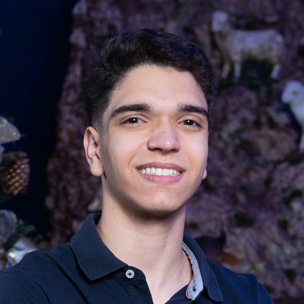

Gustavo Lopes Silva
B.Sc. student in Data Science & Artificial Intelligence · Universidade Estadual de Londrina
I'm a first-year undergraduate in Data Science and Artificial Intelligence at the State University of Londrina (UEL), Brazil (2026–2029). I work with Python, Pandas and Scikit-learn on data cleaning, exploratory data analysis and machine learning.
In parallel, I'm taking a technical course in Electromechanics at SENAI, which gives me a hands-on view of industrial processes and Industry 4.0. I'm interested in bringing data science and AI into real-world automation. I speak Portuguese and advanced (C1) English.
News
- Sep 2026Launched my personal website.
- Jan 2026Started my B.Sc. in Data Science & AI at UEL.
- Feb 2025Started the Electromechanics technical course at SENAI.
Projects
Clustering and Exploratory Data Analysis
Introduction to Data Science & AI, UEL · 2026